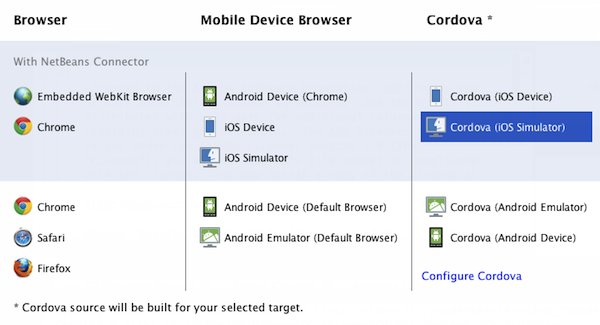
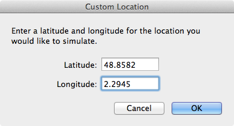
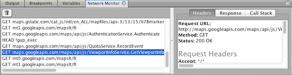

Apache NetBeans
Apache NetBeansLatest release
Cordovaアプリケーションの作成の開始
| This tutorial needs a review. You can open a JIRA issue, or edit it in GitHub following these contribution guidelines. |
このドキュメントでは、モバイル・アプリケーションとしてパッケージされ、モバイル・デバイス・シミュレータで実行されるHTML5プロジェクトを、IDEで作成する方法を説明します。HTML5アプリケーションを作成する際、Apache Cordovaサイト・テンプレートを使用してアプリケーションを作成するオプションが用意されています。Apache Cordovaは、ネイティブ・モバイル・アプリケーションとしてパッケージされるHTML、CSSおよびJavaScriptでアプリケーションを開発できるAPIのグループを提供します。アプリケーションはモバイル・デバイスで実行され、GPSやカメラなどデバイスのネイティブ機能にアクセスできます。Cordova APIを使用することで、開発者はネイティブ・コードを記述せずにモバイル・アプリケーションをビルドできます。
このドキュメントでは、Cordovaを使用してアプリケーションをインストールおよび開発するのに必要なソフトウェアをインストールする方法を説明します。Cordovaをインストールしたら、新規プロジェクト・ウィザードでCordovaテンプレートを使用してCordovaアプリケーションを作成します。その後、いくつかのコードを追加して、アプリケーションをモバイル・デバイス・シミュレータで実行します。このチュートリアルではiOSシミュレータを使用しますが、Androidデバイス・エミュレータを使用する場合も手順はほぼ同じです。
CordovaアプリケーションをAndroidエミュレータにデプロイする方法を紹介するスクリーンキャストを視聴するには、Cordova開発入門のビデオを参照してください。
このチュートリアルを完了するには、次のリソースが必要です。
| ソフトウェアまたはリソース | 必須バージョン |
|---|---|
8.0 |
|
バージョン7 |
|
— |
|
— |
|
— |
|
モバイル・プラットフォームSDK |
Androidまたは iOS |
*注意: *
-
このドキュメントでは、互換性のあるターゲット・モバイル・プラットフォームSDKとデバイス・エミュレータがすでにインストールされていることを想定して書かれています
-
このドキュメントは、HTML、CSSおよびJavaScriptについて基本的な知識またはプログラミング経験を持つ読者を想定して書かれています。NetBeans IDEでのHTML5サポートの詳細は、HTML5アプリケーションの開始を参照してください。
Cordovaのインストール
HTML5アプリケーションをネイティブ・モバイル・アプリケーションとしてNetBeans IDEにパッケージするには、ローカル・システムにCordovaをインストールする必要があります。Cordovaのインストールおよび更新には、NodeJSパッケージ・マネージャ、*npm*を使用します。Gitがローカル・システムにインストールされ、適切に構成されていることも確認する必要があります。アプリケーションをネイティブ・モバイル・アプリケーションとしてパッケージする際、CordovaはGitを使用して必要なCordovaソース・ファイルをリポジトリから取得します。
この課題では、次のほとんどの手順をターミナル・ウィンドウで実行します。
-
Node.jsがまだインストールされていない場合、ダウンロードしてインストールします。
Node.jsサイトからインストーラをダウンロードできます。
-
ターミナル・ウィンドウを開きます。
-
次のコマンドを実行して、Node.jsがインストールされていることを確認します。
$ node -vnode.jsがインストールされている場合、ターミナル・ウィンドウにバージョンが出力されます。
注意:
-
プロキシの内側にいる場合は、プロキシを使用してネットワークにアクセスするようにnode.jsを構成する必要があります。次のコマンドを実行してプロキシを設定できます。
http://proxy:8080をお使いのプロキシに置き換えます。
$ sudo npm config set proxy http://proxy:8080
$ sudo npm config set https-proxy http://proxy:8080次のコマンドを実行して、現在の構成設定を表示できます。
$ npm config list-
node.jsの構成の詳細は、https://npmjs.org/doc/config.htmlを参照してください。
-
次のコマンドを実行して、Cordovaをインストールします。
$ npm install -g cordova注意:
-
インストール・コマンドの実行時にターミナル・ウィンドウにエラー・メッセージが表示される場合は、プロキシ構成が正しいことを確認してください。
-
次のコマンドを実行して、Cordovaを最新バージョンに更新できます。
$ npm update -g cordova-
次のコマンドを実行して、Cordovaがインストールされていることを確認し、バージョンを表示します。
$ cordova --versionCordovaがインストールされている場合、ターミナル・ウィンドウにバージョンが出力されます。
-
Gitバージョン管理システムがまだインストールされていない場合、ダウンロードしてインストールします。
Gitサイトからインストーラをダウンロードできます。
*注意:*Path環境にGitを追加する必要があります。
-
次のコマンドを実行して、Gitがインストールされていることを確認します。
$ git --versionGitがインストールされている場合、ターミナル・ウィンドウにバージョンが出力されます。
注意:
-
プロキシの内側にいる場合は、プロキシを使用してネットワークにアクセスするようにGitを構成する必要があります。次のコマンドを実行してプロキシを設定できます。
http://proxy:8080をお使いのプロキシに置き換えます。
$ git config --global http.proxy http://proxy:8080
$ git config --global https.proxy http://proxy:8080次のコマンドを実行して、現在の構成設定を表示できます。
$ git config --list-
Gitの構成の詳細は、http://git-scm.com/book/en/Getting-Started-First-Time-Git-Setupで設定手順を参照してください。
これで、IDEでネイティブ・モバイル・アプリケーションの開発およびパッケージに必要なすべてのツールがインストールされました。次の課題では、新規プロジェクト・ウィザードを使用してアプリケーションを作成します。
Cordovaアプリケーションの作成
この課題では、IDEで新規プロジェクト・ウィザードを使用して新しいCordovaアプリケーションを作成します。Cordovaアプリケーションを作成するには、新規プロジェクト・ウィザードで「CordovaのHello World」テンプレートをサイト・テンプレートとして選択します。Cordovaアプリケーションは、追加のライブラリと構成ファイルを伴ったHTML5アプリケーションです。既存のHTML5アプリケーションがある場合は、IDEで「プロジェクト・プロパティ」ウィンドウを使用して、Cordovaソースおよびアプリケーションのパッケージに必要な他のファイルをCordovaアプリケーションとして追加できます。
このチュートリアルでは、 index.html ファイルといくつかのJavaScriptおよびCSSファイルがある、非常に基本的なHTML5プロジェクトを作成します。ウィザードでプロジェクトを作成する際には、いくつかのjQuery JavaScriptライブラリを選択します。
-
メイン・メニューで「ファイル」→「新規プロジェクト」([Ctrl]-[Shift]-[N]、Macの場合は[⌘]-[Shift]-[N])を選択して新規プロジェクト・ウィザードを開きます。
-
HTML5*カテゴリを選択し、「Cordovaアプリケーション」*を選択します。「次」をクリックします。

Figure 1. 新規プロジェクト・ウィザードのCordovaアプリケーション・テンプレート
-
「プロジェクト名」に*「CordovaMapApp」*と入力し、プロジェクトを保存するコンピュータ上のディレクトリを指定します。「次」をクリックします。
-
手順3の「サイト・テンプレート」で「オンライン・テンプレートをダウンロード」が選択され、リストで「CordovaのHello World」が選択されていることを確認します。「次」をクリックします。

Figure 2. 新規HTML5アプリケーション・ウィザードの「サイト・テンプレート」パネル
注意: リストのオンライン・テンプレートの1つに基づくプロジェクトを作成するにはオンラインになっている必要があります。
-
手順4の「JavaScriptファイル」では、「使用可能」ペインで
jqueryおよびjquery-mobileJavaScriptライブラリを選択し、右矢印ボタン( > )をクリックして、選択したライブラリをウィザードの「選択済」ペインに移動します。デフォルトでは、ライブラリはプロジェクトの「js/libraries」フォルダに作成されます。このチュートリアルでは、「縮小」バージョンのJavaScriptライブラリを使用します。
パネルのテキスト・フィールドを使用して、JavaScriptライブラリのリストをフィルタできます。たとえば、フィールドに*「jq」*と入力して、 jquery ライブラリを探します。[Ctrl]を押しながらライブラリの名前をクリックして、複数のライブラリを選択できます。

Figure 3. 新規HTML5アプリケーション・ウィザードの「JavaScriptライブラリ」パネル
注意:
-
「バージョン」列でライブラリのバージョン番号をクリックして、旧バージョンのライブラリを選択できるポップアップ・ウィンドウを開くことができます。デフォルトでは、ウィザードには最新バージョンが表示されます。
-
JavaScriptライブラリの最小バージョンは、圧縮されたバージョンであり、エディタで表示するとコードは包括的に表示されません。
-
手順5の「Cordovaサポート」ではデフォルト値を使用します。*「終了」*をクリックすると、ウィザードが完了します。
「終了」をクリックすると、IDEによりプロジェクトが作成され、「プロジェクト」ウィンドウにプロジェクトのノードが表示され、エディタに index.html ファイルが開かれます。

Figure 4. 「プロジェクト」ウィンドウ
「プロジェクト」ウィンドウで「 js/libs 」フォルダを展開した場合、新規プロジェクト・ウィザードで指定したJavaScriptライブラリがプロジェクトに自動的に追加されたことがわかります。JavaScriptファイルを右クリックし、ポップアップ・メニューで「削除」を選択して、JavaScriptライブラリをプロジェクトから削除できます。
JavaScriptライブラリをプロジェクトに追加するには、プロジェクト・ノードを右クリックし、「プロパティ」を選択して、「プロジェクト・プロパティ」ウィンドウを開きます。「プロジェクト・プロパティ」ウィンドウの「JavaScriptライブラリ」パネルでライブラリを追加できます。または、ローカル・システムにあるJavaScriptファイルを「 js 」フォルダに直接コピーできます。
これで、プロジェクトが実行され、ターゲット・モバイル・デバイスのエミュレータにデプロイされていることをテストできます。
-
ツールバーのブラウザ選択アイコンをクリックし、表の「Cordova」列でターゲット・モバイル・デバイス・エミュレータが選択されていることを確認します。「Cordova」列では、「Androidエミュレータ」または「iOSシミュレータ」を選択できます(OS XおよびXCodeが必要)。

Figure 5. ツールバーのドロップダウン・リストで選択されたブラウザ
-
ツールバーの「実行」アイコンをクリックします。
「実行」を選択すると、IDEでCordovaアプリケーションがエミュレータにデプロイされます。

Figure 6. iOSシミュレータでのアプリケーション
*注意:*iOSシミュレータにデプロイする場合、シミュレータは自動的に開きます。アプリケーションをAndroidエミュレータにデプロイする場合は、アプリケーションを実行する前に、エミュレータを構成して起動する必要があります。CordovaアプリケーションをAndroidエミュレータにデプロイする方法を紹介するスクリーンキャストを視聴するには、Cordova開発入門のビデオを参照してください。
アプリケーションの変更
この課題では、 index.html および index.js ファイルを編集します。「CordovaのHello World」テンプレートで生成されたコードを、アプリケーションでの現在の場所のマップを表示するコードに置き換えます。また、デフォルトのCordova構成を変更して、アプリケーションで不要なCordovaプラグインを削除します。
HTMLファイルの編集
この課題では、ソース・エディタでHTMLファイルを編集して、ライブラリとCSSファイルへの参照を追加し、ページ要素を追加します。
-
エディタに`index.html`を開きます(まだ開いていない場合)。
エディタで、IDEにより「CordovaのHello World」テンプレートに基づいていくつかのコードが生成されたことを確認できます。
-
エディタで、プロジェクトの作成時に追加したjQuery JavaScriptライブラリとCSSファイルへの参照を追加します。開始および終了
<head>タグの間に次のコード(太字)を追加します。
<html>
<head>
<meta charset=UTF-8">
<meta name="format-detection" content="telephone=no" />
<meta name="viewport" content="user-scalable=no, initial-scale=1, maximum-scale=1, minimum-scale=1, width=device-width, height=device-height, target-densitydpi=device-dpi">
<link rel="stylesheet" type="text/css" href="css/index.css" />
*<link rel="stylesheet" href="js/libs/jquery-mobile/jquery.mobile.min.css"/>
<script type="text/javascript" src="js/libs/jquery/jquery.min.js"></script>
<script type="text/javascript" src="js/libs/jquery-mobile/jquery.mobile.min.js"></script>*
<title>Hello World</title>
</head>
<body>
...
</html>「プロジェクト」ウィンドウでファイルへのパスを確認できます。また、エディタでコード補完を使用できます。

Figure 7. エディタでのコード補完
-
Google Maps JavaScript APIへの次のリンクを、`<head>`タグの間に追加します。
<script type="text/javascript" src="http://www.google.com/jsapi"></script>*注意:*これは、非推奨になったJavaScript API v2へのリンクです。このチュートリアルではデモ目的でこのJavaScriptを使用していますが、実際のアプリケーションでは最新バージョンを使用する必要があります。
-
index.js`および`cordova.jsJavaScriptファイルへの次のリンクを除いて、`<body>`タグの間のすべてのコードを削除します。
<body>
*<script type="text/javascript" src="cordova.js"></script>
<script type="text/javascript" src="js/index.js"></script>*
</body>
</html>`index.js`ファイルは、プロジェクトの作成時に自動的に生成されました。このファイルは「プロジェクト」ウィンドウの`js`ノードの下にあります。`index.js`のコードは、チュートリアルの後半で変更します。
`cordova.js`はCordovaアプリケーションのビルド時に生成されるため、「プロジェクト」ウィンドウには表示されません。
-
bodyタグの間に次のコード(太字)を追加します。
<body>
*<div data-dom-cache="false" data-role="page" id="mylocation">
<div data-role="header" data-theme="b">
<h1 id="header">Searching for GPS</h1>
<a data-role="button" class="ui-btn-right" onclick="showAbout()">About</a>
</div>
<div data-role="content" style="padding:0;">
<div id="map" style="width:100%;height:100%; z-index:50">
</div>
</div>
<div data-role="footer" data-theme="b" data-position="fixed" >
<h4>Google Maps</h4>
</div>
</div>
<div data-dom-cache="false" data-role="page" id="about">
<div data-role="header" data-theme="b">
<a data-role="button" data-rel="back" href="#mylocation" data-icon="arrow-l" data-iconpos="left" class="ui-btn-left">Back</a>
<h1>About</h1></div>
<div data-role="content" id="aboutContent">
</div>
<div data-role="footer" data-theme="b" data-position="fixed" >
<h4>Created with NetBeans IDE</h4>
</div>
</div>
*
<script type="text/javascript" src="cordova.js"></script>
<script type="text/javascript" src="js/index.js"></script>
</body>
</html>Cordova構成の変更
この課題では、アプリケーションにインストールされるCordovaプラグインのリストを変更します。
-
「プロジェクト」ウィンドウでプロジェクト・ノードを右クリックし、ポップアップ・メニューで「プロパティ」を選択します。
-
カテゴリのリストで*「Cordova」*を選択します。

Figure 8. 「プロジェクト・プロパティ」ウィンドウの「Cordovaプラグイン」タブ
「アプリケーション」タブを使用して、`config.xml`で指定されたアプリケーションのCordova構成詳細を表示および編集できます。
-
「Cordova」パネルで「プラグイン」タブをクリックします。
「プラグイン」タブには2つのペインがあります。「使用可能」ペインには、現在使用可能なCordovaプラグインのリストが表示されます。
「選択済」ペインには、アプリケーションにインストールされているプラグインのリストが表示されます。「CordovaのHello World」テンプレートを使用してアプリケーションを作成すると、デフォルトですべてのプラグインがインストールされます。ほとんどのアプリケーションでは、すべてのプラグインは必要ありません。「プロジェクト・プロパティ」ウィンドウの「プラグイン」タブを使用して、アプリケーションで必要のないプラグインを削除できます。
*注意:*エディタで`nbproject/plugins.properties`ファイルを編集して、インストールされているプラグインを編集することもできます。
-
Device API、Dialogs (Notifications)およびGeolocation以外のすべてのプラグインを削除します。「OK」をクリックします。

Figure 9. 「プロジェクト・プロパティ」ウィンドウの「Cordovaプラグイン」タブ
JavaScriptファイルの編集
この課題では、テンプレートで生成されたJavaScriptコードを削除し、現在の場所のマップを表示するいくつかの簡易なメソッドを追加します。
-
エディタで`index.js`を開きます。
プロジェクトの作成時に、IDEで`index.js`にいくつかのボイラープレート・コードが生成されました。このアプリケーションでは、生成されたすべてのコードを削除できます。
-
生成されたコードを次のコードに置き換えます。変更を保存します。
var map;
var marker;
var watchID;
$(document).ready(function() {
document.addEventListener("deviceready", onDeviceReady, false);
//uncomment for testing in Chrome browser
// onDeviceReady();
});
function onDeviceReady() {
$(window).unbind();
$(window).bind('pageshow resize orientationchange', function(e) {
max_height();
});
max_height();
google.load("maps", "3.8", {"callback": map, other_params: "sensor=true&language=en"});
}
function max_height() {
var h = $('div[data-role="header"]').outerHeight(true);
var f = $('div[data-role="footer"]').outerHeight(true);
var w = $(window).height();
var c = $('div[data-role="content"]');
var c_h = c.height();
var c_oh = c.outerHeight(true);
var c_new = w - h - f - c_oh + c_h;
var total = h + f + c_oh;
if (c_h < c.get(0).scrollHeight) {
c.height(c.get(0).scrollHeight);
} else {
c.height(c_new);
}
}
function map() {
var latlng = new google.maps.LatLng(50.08, 14.42);
var myOptions = {
zoom: 15,
center: latlng,
streetViewControl: true,
mapTypeId: google.maps.MapTypeId.ROADMAP,
zoomControl: true
};
map = new google.maps.Map(document.getElementById("map"), myOptions);
google.maps.event.addListenerOnce(map, 'tilesloaded', function() {
watchID = navigator.geolocation.watchPosition(gotPosition, null, {maximumAge: 5000, timeout: 60000, enableHighAccuracy: true});
});
}
// Method to open the About dialog
function showAbout() {
showAlert("Google Maps", "Created with NetBeans 7.4");
}
;
function showAlert(message, title) {
if (window.navigator.notification) {
window.navigator.notification.alert(message, null, title, 'OK');
} else {
alert(title ? (title + ": " + message) : message);
}
}
function gotPosition(position) {
map.setCenter(new google.maps.LatLng(position.coords.latitude, position.coords.longitude));
var point = new google.maps.LatLng(position.coords.latitude, position.coords.longitude);
if (!marker) {
//create marker
marker = new google.maps.Marker({
position: point,
map: map
});
} else {
//move marker to new position
marker.setPosition(point);
}
}*注意:*このチュートリアルでは、`onDeviceReady`メソッドの呼出しはコメントにされます。アプリケーションをモバイル・デバイス・エミュレータにデプロイする際に、このメソッドは不要であるためです。アプリケーションをWebブラウザで実行する場合は、`onDeviceReady`メソッドの呼出しをコメント解除する必要があります。
-
エミュレータを再起動するか設定をリセットして、エミュレータをリセットします。
-
ツールバーで「実行」をクリックして、アプリケーションをエミュレータにデプロイします。
iOSシミュレータで、アプリケーションが現在の場所を使用することを許可するよう求めるメッセージが表示されます。

Figure 10. アプリケーションの場所のプロンプト
iOSシミュレータのメイン・メニューから「デバッグ」>「場所」>カスタム場所を選択してカスタム場所ダイアログ・ボックスを開き、iOSシミュレータでシミュレートされた場所をテストできます。

Figure 11. iOSシミュレータのカスタム場所ダイアログ・ボックス
現在の場所として緯度フィールドに48.8582および経度フィールドに2.2945を入力すると、場所がエッフェル塔としてマップに表示されます。

Figure 12. iOSシミュレータでカスタム場所を使用する場合のアプリケーション
アプリケーションのデバッグ
この課題では、JavaScriptファイルにブレークポイントを設定して、アプリケーションを再度実行します。
-
エミュレータをリセットまたは再起動します。
-
エディタで`index.js`を開きます。
-
`gotPosition`メソッドの次の行で左マージンをクリックして、ブレークポイントを配置します。
var point = new google.maps.LatLng(position.coords.latitude, position.coords.longitude);-
ツールバーの「実行」をクリックして、アプリケーションを再度実行します。
アプリケーションを実行すると、アプリケーションが現在の場所を特定しようとしたときに、デバッガでブレークポイントにヒットします。

Figure 13. ブレークポイントで停止したデバッガ
変数の上にカーソルを置くと、その変数の詳細を示すツールチップが表示されます。`latitude`変数の上にカーソルを置くと、この変数の値がツールチップに表示されます。

Figure 14. 変数を示すツールチップ
`position`または`coords`の上にカーソルを置くと、ツールチップには、クリックしてツールチップを展開する矢印が表示されます。

Figure 15. 変数を示すツールチップ
展開したツールチップには、値の詳細が表示されます。

Figure 16. 変数を示すツールチップ
この場合、「変数」ウィンドウで値を表示する方が簡単です。「変数」ウィンドウでは、現在の場所の緯度と経度を表示できます。

Figure 17. 「変数」ウィンドウ
「ネットワーク・モニター」ウィンドウでは、アプリケーション・リクエストのリストを表示できます。

Figure 18. 「変数」ウィンドウ
サマリー
このチュートリアルでは、IDEでCordovaアプリケーションを作成するために必要なソフトウェアをインストールおよび設定する方法について学習しました。Cordovaアプリケーションを作成する方法について学習し、いくつかのCordova構成設定を変更しました。
関連項目
IDEでのHTML5アプリケーションのサポートの詳細は、netbeans.orgで次のソースを参照してください。
-
[ビデオ] Cordova開発入門
-
HTML5アプリケーションでのCSSスタイル・シートの操作。このチュートリアルで作成したアプリケーションを継続するドキュメントで、IDEでCSSのウィザードおよびウィンドウのいくつかを使用する方法、およびChromeブラウザの「検査」モードを使用してプロジェクト・ソース内の要素をビジュアルに特定する方法を示します。
-
HTML5アプリケーションでのJavaScriptのデバッグとテスト。IDEでJavaScriptファイルをデバッグおよびテストするのに役立つツールをIDEが提供する方法を示すドキュメントです。
-
_NetBeans IDEによるアプリケーションの開発_のJavaScriptファイルの作成
jQueryの詳細は、公式ドキュメントを参照してください。
-
公式ホーム・ページ: http://jquery.com
-
UIホーム・ページ: http://jqueryui.com/
-
チュートリアル: http://docs.jquery.com/Tutorials
-
ドキュメントのメイン・ページ: http://docs.jquery.com/Main_Page
-
UIデモおよびドキュメント: http://jqueryui.com/demos/